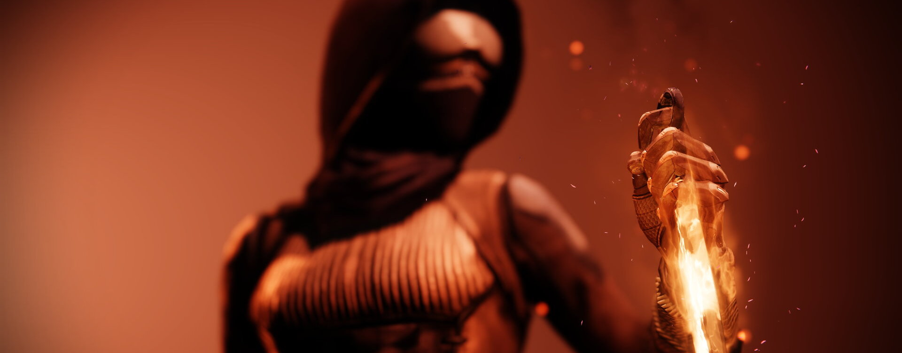
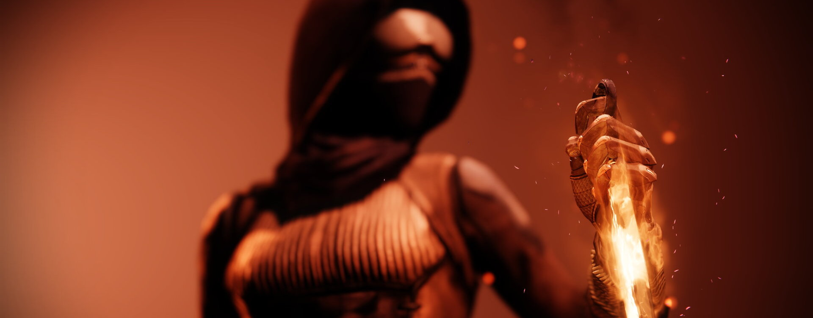

Le Chasseur
Les Chasseurs sillonnent les terres sauvages qui s'étendent au-delà de la Cité, exploitant la Lumière afin de découvrir les plus grands secrets de nos mondes perdus. Éclaireurs téméraires, ils sont des assassins furtifs, experts des couteaux et des armes de précision. Les Chasseurs tracent leur propre voie et respectent leur propre loi.
Cette surveillance est vraiment minable. Il se repose contre mon Passereau, à l'affût, prêt à passer à l'action à tout moment. Sa bande l'encercle et tout le monde est sur le qui-vive. Ils cherchent des ennuis. Ils me cherchent, moi.
Ils plissent les yeux pour se protéger du soleil, mais ça ne les aidera pas. Je me rappelle quand je me couvrais les yeux. Quand j'essayais de rester dans l'ombre. Maintenant, je garde les yeux grands ouverts.
Je vide mon verre et je me lève en étirant mes mains fatiguées. Le soleil se réfléchit sur le canon de son pistolet, et je sais que tout va aller très vite. Le groupe commence à s'agiter et l'impatience mène à l'imprécision. Je ne pardonne pas l'imprécision.
Je m'avance dans la lumière du soleil et j'ai l'impression de pouvoir respirer à nouveau. Tout d'un coup, j'ai attiré leur attention, comme si ça ne faisait pas déjà 20 minutes que je les observais. Le grand décolle ses fesses de mon Passereau. C'est déjà une victoire. Puis il se relève et porte la main à son pistolet. La mienne reste sur ma ceinture.
« Regardez qui se montre enfin au grand jour. »
Ça, tu l'as dit. Et tu vas le regretter.
Pistolero
Pistolet d'or: As de la gâchette
Invoquez un pistolet ardent de tir rapide et annihilez vos cibles à l'aide de la Lumière. Causer des Embrasements solaires quand votre Super est actif vous rend une cartouche de Pistolet d'or.
Pistolet d'or: Tireur d'élite
Invoquez un pistolet ardent de précision et annihilez vos cibles à l'aide de la Lumière solaire. Votre Pistolet d'or inflige des dégâts de précision considérablement augmentés, transperce les cibles et crée des orbes de Puissance en cas de tirs de précision.
Déluges de lames
Sautez et libérez une volée de couteaux explosifs chargés d'énergie solaire.
- Grenades